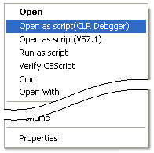
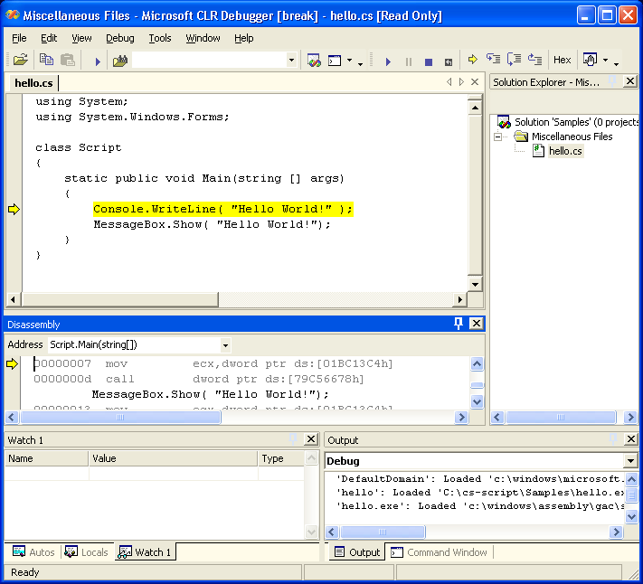

Microsoft .NET Framework SDK Version 2.0 is a freely available collection of development tools. It can be downloaded from here.
CS-Script applications (as any other CLR application) can be run very easily under the Microsoft CLR Debugger (DbgCLR.exe).
The Microsoft CLR Debugger is intended as an interim tool for debugging applications written and compiled for the common language runtime. (MSDN)
CLR Debugger is just a debugger. While it is a good debugger there it is not integrated with any code editor.
Open script in CLR Debugger by using shell extension:

After opening the script in CLR Debugger press F10 to start debugging.
This is the screenshot of the debugging "Hello World!" sample (hello.cs file).

Debugging tutorial | Script library